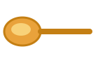

Hozzávalók
Elkészítés
A csokit a margarinnal vízgőz fölött vagy alacsony lángon felolvasztod, simára kevered, és belekevered a kakaóport.
Megkóstolod: ha túl keserű, 2-3 evőkanál eritritet keversz bele a 320 grammból.
A tojásokat a maradék eritrittel világosra és duplájára habosítod (5-8 perc).
A langyosra hűlt csokis masszát óvatosan a tojáshabba forgatod, hogy minél kevésbé törjön.
Sütőpapírral bélelt tortaformában 110 °C-on 1 óráig sütöd.
A formában hagyod kihűlni, utána veszed ki.

Jegyzet. ez a gyűjtemény saját receptje, Áron sütötte meg 2026 őszén: liszt nincs benne, cukor helyett eritrit, vaj helyett laktózmentes margarin. Az eritritet nem kell porrá darálni, úgy is jó lesz. A teteje halványabb, mert az eritrit nem barnul; ha a tűpróba után még nagyon nedves a közepe, adj neki 10 percet. 90 %-os csokihoz kb. 400 g eritrit kell. A margarin címkéjén nézd meg, nincs-e benne tej, savó vagy kazein. A csokoládé címkéjén a „nyomokban tejet tartalmazhat” jelölést is nézd meg.